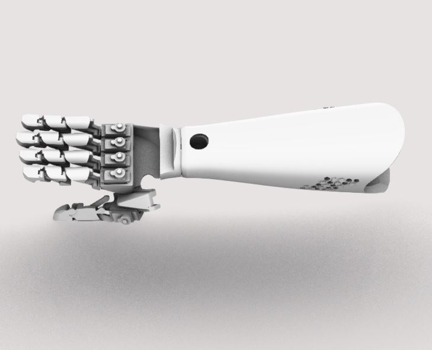

CleverLab surge con el deseo de ayudar a la comunidad, ya sean niños, jóvenes y adultos que hayan sufrido de la pérdida de alguna de sus extremidades o hayan nacido con una morfología diferente en sus extremidades, dado a que existe en el país un atraso desarrollo tecnológico en cuanto a la rehabilitación.
Es por esto, que el objetivo general de CleverLab es el desarrollo de dispositivos funcionales, con fines terapéuticos a corto plazo, con piezas únicas y de acorde a las necesidades de cada usuario.
Además, nos centramos en desarrollar nuevas tecnologías para uso médico con el fin de mitigar molestias comunes como es el dolor de cabeza y migrañas, monitoreo en tiempo real de afecciones cardiacas, dispositivos de realidad virtual, entre otros desarrollos.

FUNDADOR

A la temprana edad de 10 años nació en mí el interés de desarmar todo tipo de tecnología que estuviese a mi alcance, ya que me parecía muy intrigante como estos pequeños sistemas electrónicos eran capaces de realizar tareas programadas a voluntad de su inventor (a pesar de que la mayoría de las cosas que me cautivaron me parecían casi inexplicables) el orden de los circuitos, pequeñas ciudades compuestas por resistencias, diodos y microcontroladores, en donde por sus calles se desplazaba la electricidad provenientes de baterías o los propios enchufes domésticos
Esto se mezcló con una gran pasión, que se ha mantenido generación tras generación, que es la relojería y los sistemas de movimientos mecánicos, los engranajes, la sutileza y la utilidad de algo tan pequeño, preciso y bello.
Es en este punto que decido dar rienda suelta a mi gusto por combinar las piezas de los objetos que había desarmado, con la mentalidad de que preste alguna utilidad ya sea para el día a día, o simplemente para construir una pieza única para mi, aunque no fuera muy útil.
A lo largo de los años, me he ido dando cuenta que es algo inherente al ser humano, sentir amor hacia el talento que te fue entregado y que realmente es un elemento que se debe cuidar, cultivar, nutrir y desarrollar probablemente sin límite alguno, y, hasta el último de nuestros días.
Es por ello que comienzo en esta etapa de mi niñez a estudiar de manera autodidacta y con libros prestados por hermanos mayores de mis amigos a incursionar en los principios de la electrónica, de la física mecánica y del dibujo.
Es justamente en mi formación de enseñanza media, donde comienzo a tomarme esto con mayor grado de responsabilidad, estudiando mecánica y diseño industrial, pasando también por electrónica.
Hasta el día de hoy he logrado egresar de “Mecánico y Diseñador Industrial”, en mis estudios superiores seguí perfeccionándome en la mecánica, estudiando y egresando de la carrera de “Mantenimiento Predictivo (Física Mecánica)” y posteriormente seguir el camino de la Ingeniería, complementando así el gusto por desarrollar tecnología que ayude al sector industrial y directamente a personas.